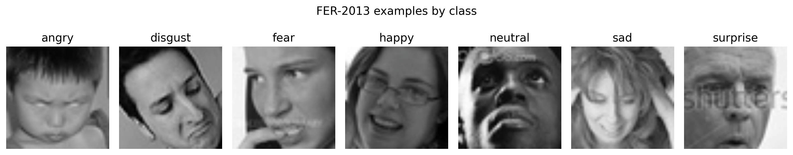
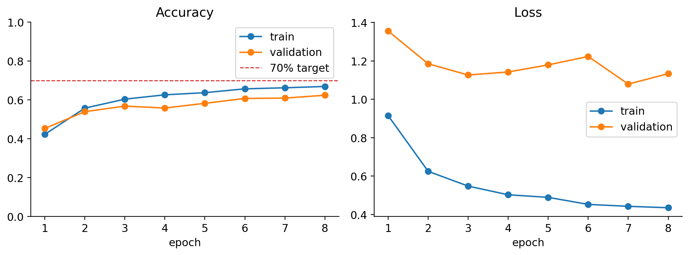
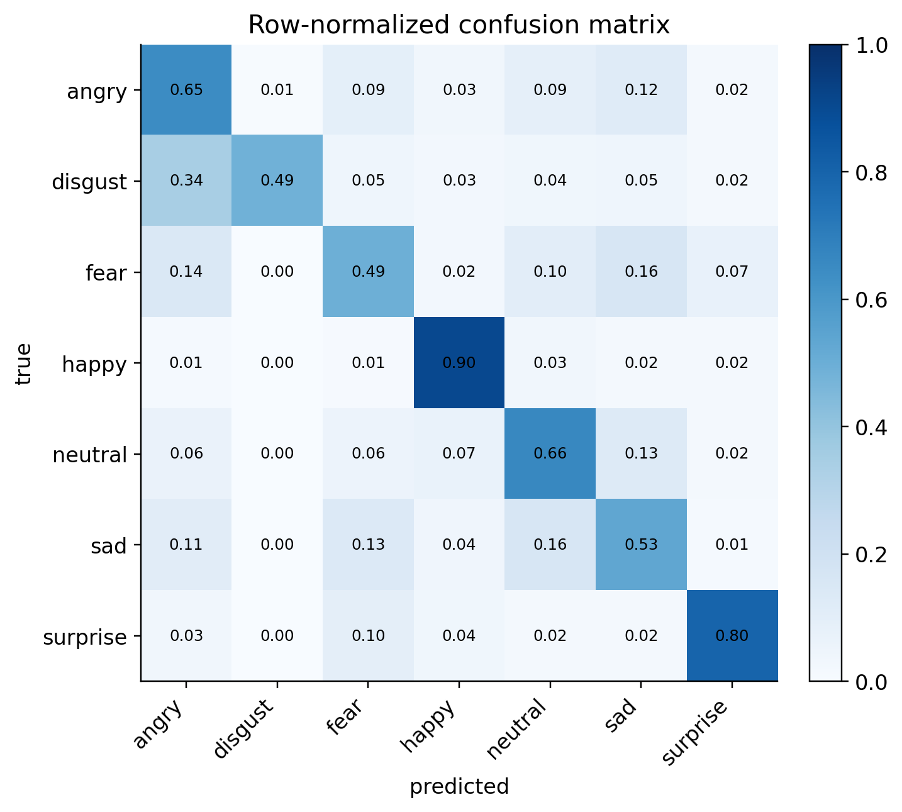
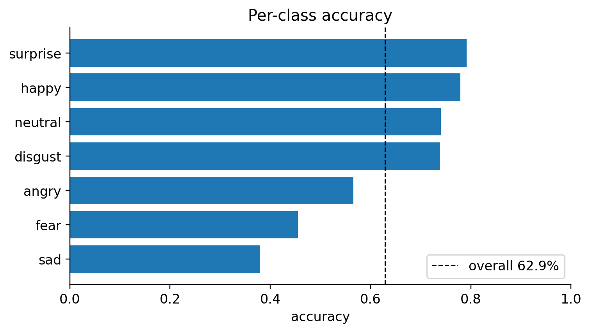
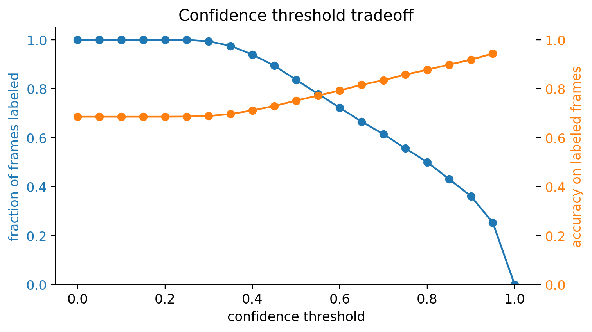
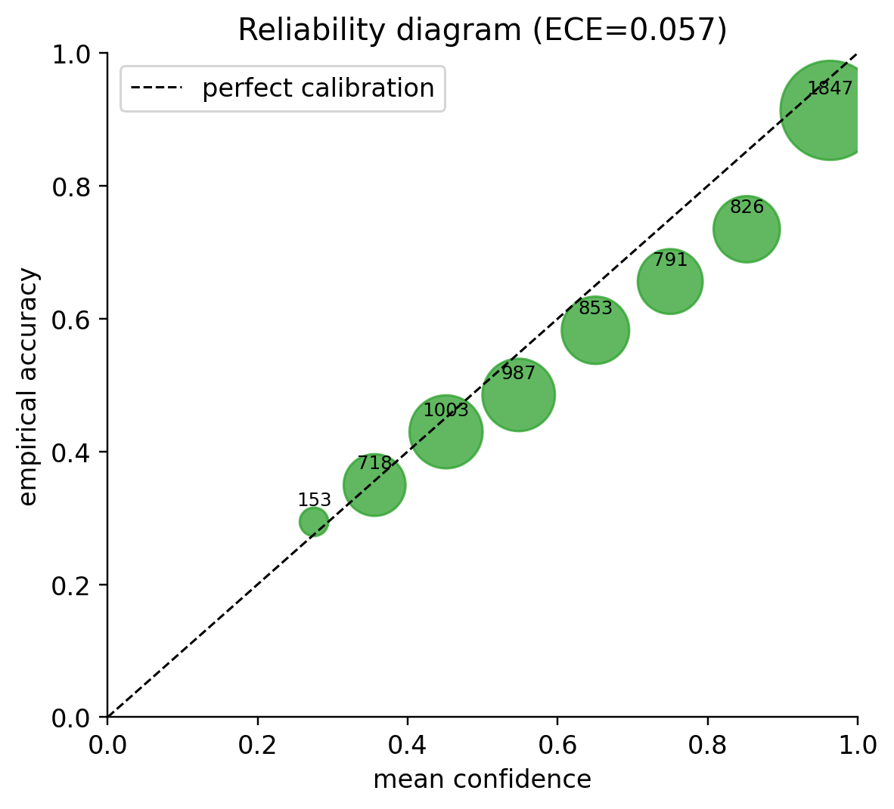

Why this problem interested us
We started Seeing Clearly with a simple motivation: facial expressions carry social information, but that information is not equally easy for everyone to interpret. A lightweight tool that notices visible expression cues could be useful in some assistive contexts, especially if it is careful about uncertainty.
The careful part matters. A face is not a window into a person's mind. A smile can be polite, nervous, or genuine. A neutral expression can hide fatigue or concentration. So we do not think of our system as an emotion reader. We think of it as a classifier trained on a limited dataset of expression labels, and our main question became: when is that classifier reliable enough to show a cue, and when should it hedge?
Our prototype uses a webcam, detects faces, and predicts one of seven FER-2013 expression classes: angry, disgust, fear, happy, neutral, sad, and surprise. The final model reaches about 68.6% accuracy on the held-out FER-2013 test set. That is far above random chance, close to our original 70% goal, and still uneven enough that the interface should not speak with full confidence all the time.
Background: expression labels are not emotions
Facial-expression recognition is usually presented as a computer vision problem: crop a face, feed it into a model, and predict a label. FER-2013 made this setup accessible by providing more than 35,000 grayscale face images labeled with seven expression categories. ResNet models made it possible to train deeper image classifiers without the optimization problems that earlier deep networks often faced.
But the social meaning of this task is more complicated than the input-output framing suggests. Prior work on reading mental states from facial cues shows why this problem is interesting for accessibility, but the same framing also raises a warning: expression classification should not be treated as a direct measurement of someone's internal state. Dataset labels are simplified categories, collected under particular conditions, and they may not transfer cleanly to a live social setting.
For that reason, our project is not only about maximizing test accuracy. We also look at class-level errors, confidence thresholds, and calibration-style reliability. Those pieces tell us how the model behaves, not just whether it gets a benchmark number.
What the model sees
FER-2013 images are 48 by 48 pixel grayscale faces. We resize them to 224 by 224 and convert them to three channels so they can pass through ResNet-18. During training, we use augmentation such as random crops, flips, rotations, affine transforms, contrast changes, and random erasing.

The dataset is also imbalanced. Some classes, especially disgust,
have far fewer training examples than classes such as happy. That
imbalance motivated one of our main ablations: we compared a clean transfer
baseline against class-balanced training variants designed to improve weaker
classes.
Model and experimental setup
Our model is a ResNet-18 image classifier. We replace the final fully connected layer with a dropout layer followed by a seven-class linear classifier. The objective is cross-entropy loss. In the live prototype, OpenCV detects a face in each webcam frame, crops it, applies the same preprocessing, and passes it through the model.
We tried several training strategies. The important distinction is between exploratory experiments and the clean final comparison. Some early continuation runs fine-tuned from checkpoints that had already seen a different validation split. Those runs were useful for ideas, but we do not use them as final evidence.
For the final comparison, we fixed one stratified train/validation split from the FER-2013 training set, trained all candidate models only on that training subset, selected a checkpoint by validation metrics, and evaluated the selected model once on the held-out FER-2013 test set.
| Candidate | Best epoch | Val. accuracy | Macro accuracy | Weak-class accuracy | Selection score |
|---|---|---|---|---|---|
| Clean transfer baseline | 11 | 69.55% | 66.41% | 57.05% | 67.98% |
| Balanced, weak boost 1.2 | 14 | 68.69% | 67.61% | 57.94% | 66.11% |
| Balanced, weak boost 1.4 | 14 | 67.72% | 66.78% | 58.17% | 65.44% |
The class-balanced models did what we hoped in one sense: they improved the average performance on the weaker classes. But they did not win the clean validation selection score. The selected final model is therefore the plain transfer baseline, not the more complicated balanced variant.
What happened
The selected clean model reached 68.56% accuracy on the FER-2013 test set. This is close to our original 70% goal and much stronger than the early prototype, which was around 40% validation accuracy after a short run. It is also not the whole story.

The confusion matrix shows the difference between "the model is fairly good" and "the model is safe to rely on." Some classes are much easier than others. Happy and surprise tend to be clearer. Fear and sad remain harder, and mistakes between nearby negative expressions are especially important in an assistive context.


When should the model speak?
A normal classifier always returns a label. A real interface does not have to. If the model is uncertain, the interface can withhold the label, show a softer cue, or ask the user to interpret the situation themselves. We tested this idea by looking at confidence thresholds.

This matters because an assistive system has a different cost structure from a leaderboard model. A wrong label shown with confidence can be worse than no label. In our prototype, this suggests that expression predictions should be paired with confidence or translated into cautious prompts rather than blunt statements.

The reliability plot is not a full calibration solution, but it is a useful diagnostic. It tells us that confidence is meaningful enough to use, but not trustworthy enough to ignore. If we had more time, we would add temperature scaling and evaluate whether calibrated confidence improves the threshold tradeoff.
The live prototype
We also built a webcam prototype. It detects faces in a live video stream, runs
the expression classifier, smooths predictions over time, and displays a suggested
response prompt. For example, a high-confidence sad prediction might
produce a prompt like "Ask if everything is okay."
The prototype helped us think about the difference between a model and a usable tool. Frame-by-frame labels flicker. Face detection sometimes fails. Lighting changes the input. Even when the model is correct, the interface wording matters. This is why we see the app as a qualitative deployment test, while the notebook results above are the quantitative evidence.
Limitations and ethics
The biggest limitation is conceptual: facial expressions are not emotions. Our model predicts the labels in FER-2013, not a person's inner experience. That distinction is especially important because this project was motivated by assistive use. A tool meant to help someone socially should not replace their judgment or pressure other people into being interpreted by a machine.
The dataset also has likely bias. We did not have demographic labels for a full fairness evaluation, so we cannot claim that performance is equal across race, gender, age, culture, disability, lighting, camera quality, or expression style. That is a serious limitation for any facial-analysis system.
Finally, webcam-based emotion classification raises privacy and consent issues. A local classroom prototype is very different from a deployed system. If this were developed further, we would require clear consent, on-device processing, calibration, fairness testing, and user studies with the communities it is meant to support.
What we would try next
With three more months, we would focus less on squeezing out another percentage point of accuracy and more on reliability. We would add temperature scaling, evaluate calibrated thresholds, test temporal smoothing quantitatively, and run a small user study to see whether the prompts actually help or distract.
We would also compare FER-2013 with a more modern and more diverse facial expression dataset. A model trained on low-resolution benchmark images can be a useful learning tool, but it is not enough evidence for real assistive deployment.
Reproducibility
The code, checkpoints, and final notebook are available in our GitHub repository:
Cece-AA/Seeing-Clearly.
The notebook
notebooks/Seeing_Clearly_Final_Reproducibility.ipynb regenerates the
figures in this post and documents the model-selection experiments.
python3 -m pip install -r requirements.txt
jupyter notebook notebooks/Seeing_Clearly_Final_Reproducibility.ipynbFor the submitted zip file, this page is designed to render locally in Chrome with no external JavaScript, fonts, or CSS dependencies.
References
- S. Baron-Cohen, S. Wheelwright, J. Hill, Y. Raste, and I. Plumb. "The Reading the Mind in the Eyes Test revised version." Journal of Child Psychology and Psychiatry, 2001.
- I. J. Goodfellow et al. "Challenges in representation learning: A report on three machine learning contests." arXiv:1307.0414, 2013.
- K. He, X. Zhang, S. Ren, and J. Sun. "Deep residual learning for image recognition." arXiv:1512.03385, 2015.
- C. Guo, G. Pleiss, Y. Sun, and K. Q. Weinberger. "On calibration of modern neural networks." arXiv:1706.04599, 2017.